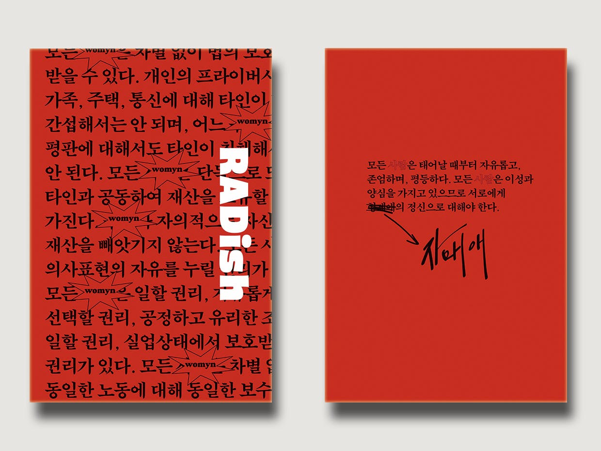
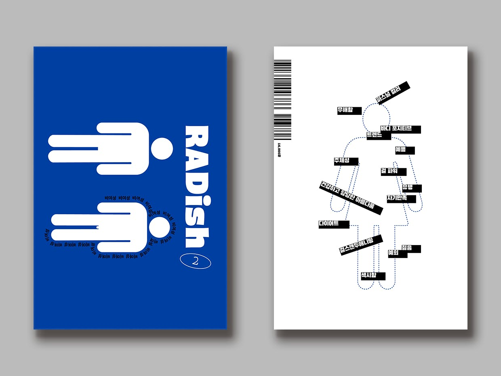

래디쉬(Radish)는 움튼 출판사(구 래디컬 페미니스트 출판팀1 )에 의해 기획, 발간된 래디컬 페미니즘 잡지이다.
래디쉬 창간호 펀딩은 텀블벅에서 2019년 11월 6일부터 12월 4일까지 29일간 진행되었다. 1,187명의 후원인이 총 28,279,690원을 모금하며 목표액의 1413%을 달성했다. 당시 래디컬 페미니스트 출판팀은 펀딩 소개에서 출간 의도를 아래와 같이 밝혔다.
당사자가 직접 이야기하는 래디컬 페미니즘 잡지
는 '4B(비혼, 비출산, 비연애, 비섹스)'와 '4탈(탈코르셋, 탈아이돌, 탈오타쿠, 탈종교)', 래디컬 페미니스트로서의 삶과 운동, 미래세대 여성에 대한 책임, 여성의 경제적·정서적 자립, 비혼 여성 생활 팁 등 래디컬 페미니즘의 주요 의제 및 이를 실천하기 위해 실질적으로 필요한 정보를 꾸준히 선별하고 기록하는 플랫폼으로 자리매김하는 것을 목표로 삼고 있습니다.

창간호에서와 마찬가지로,
2호의 참가자들 역시 여성을 위하는 것이야말로 페미니즘이라고 믿는, 세상을 변화시키겠다는 목적에서 우선 자신을 변화시켜온 평범한 래디컬 페미니스트들입니다. 우리는 한국의 여성혐오적 현실을 바꾸는 건 소수의 엘리트가 아닌, 피부에 와닿는 차별에 피부에 와닿는 방식으로 저항하고 변화하는, 우리와 당신 같은 평범한 여성이라고 믿습니다. 우리의 변화를 기록하고 서로를 지원하는 것은 우리 래디컬 페미니스트 당사자들의 과제입니다. 한국의 래디컬 페미니즘을 기록하고 래디컬 페미니스트 사이 소통의 플랫폼으로서
가 꾸준히 간행될 수 있도록 많은 응원을 부탁드립니다.

2020년 10월 발간 예정이다.